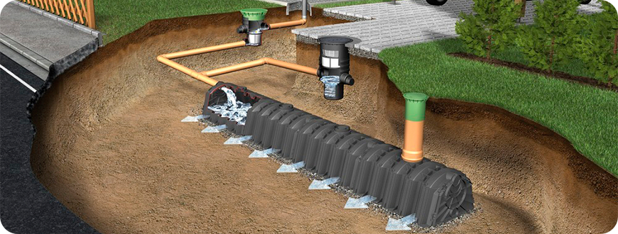
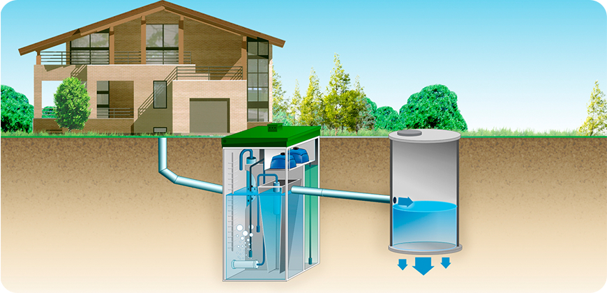

Каким должен быть уклон канализации
Welcome to Colors on the Web. This website is dedicated to color theory and the use of colors in design. Whether you are a blogger who needs ideas for a color scheme or a designer in search of some color.
Welcome to Colors on the Web. This website is dedicated to color theory and the use of colors in design. Whether you are a blogger who needs ideas for a color scheme or a designer in search of some color inspiration, the tools presented here should give you a starting point. My hope is that this site will give web designers a better understanding of color theory and the importance of colors as it applies to web design.
Welcome to Colors on the Web. This website is dedicated to color theory and the use of colors in design. Whether you are a blogger who needs ideas for a color scheme or a designer in search of some color inspiration, the tools presented here should give you a starting point. My hope is that this site will give web designers a better understanding of color theory and the importance of colors as it applies to web design. Welcome to Colors on the Web. This website is dedicated to color theory and the use of colors in design. Whether you are a blogger who needs ideas for a color scheme or a designer in search of some color inspiration, the tools presented here should give you a starting point. My hope is that this site will give web designers a better understanding of color theory and the importance of colors as it applies to web design.
Welcome to Colors on the Web. This website is dedicated to color theory and the use of colors in design. Whether you are a blogger who needs ideas for a color scheme or a designer in search of some color inspiration, the tools presented here should give you a starting point. My hope is that this site will give web designers a better understanding of color theory and the importance of colors as it applies to web design. Welcome to Colors on the Web. This website is dedicated to color theory and the use of colors in design. Whether you are a blogger who needs ideas for a color scheme or a designer in search of some color inspiration, the tools presented here should give you a starting point. My hope is that this site will give web designers a better understanding of color theory and the importance of colors as it applies to web design.
Welcome to Colors on the Web. This website is dedicated to color theory and the use of colors in design. Whether you are a blogger who needs ideas for a color scheme or a designer in search of some color inspiration, the tools presented here should give you a starting point. My hope is that this site will give web designers a better understanding of color theory and the importance of colors as it applies to web design. Welcome to Colors on the Web.